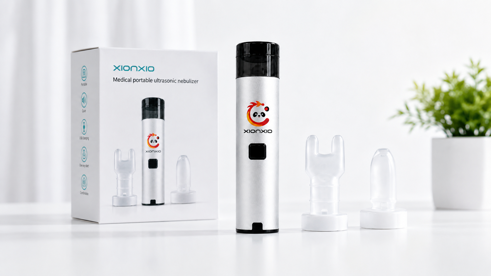

Years R&D experience
XIONXIO / 01 MEDICAL PORTABLE ULTRASONIC NEBULIZER
Medical portable ultrasonic nebulizers for global supply.
Focused on medical portable ultrasonic nebulizer R&D, with 3+ years of experience and 30+ patents. MOQ from 10 pcs with OEM/ODM, branding and packaging support; exported to 45+ markets, with regulatory documentation requirements available for discussion with distributors, importers and private-label teams.

Granted patents
Units Annual Capacity
Export markets
WHY CHOOSE XIONXIO · BUILT FOR REAL LIFE
We solve the 6 key pain points every buyer faces.
Traditional desktop nebulizers have their place. But when a device is loud, bulky or awkward to bring along, it can end up waiting at home. XIONXIO is built around a simpler idea: a medical portable ultrasonic nebulizer should move with real life.
- ✓
A traditional tabletop nebulizer can be loud before you even begin.ZY01BG1-2Designed around a calmer, more personal moment at home. - ✓
A big machine can take up a permanent spot on the table.ZY01BG1-2Slim hand-held shape that is easy to store. - ✓
Going out can mean leaving the nebulizer at home.ZY01BG1-2Made to go with workdays, visits and travel bags. - ✓
Setting up a large device can feel like one more chore.ZY01BG1-2At about 92 g, easier to pick up, hold and put away. - ✓
Leftover liquid can mean extra clean-up after use.ZY01BG1-2Designed with more thoughtful residual-liquid handling. - ✓
Cold, forceful air can make a session feel less comfortable.ZY01BG1-2Portable ultrasonic technology for a calmer, more comfort-oriented daily-use experience.
TECHNOLOGY BREAKTHROUGH
Five core innovations set our platform apart.
Each upgrade is designed around a more practical portable routine: easier to hold, easier to bring along and easier to fit into daily life.
SLIM HANDHELD DESIGN
Designed for easier clean-up after use.
A slim hand-held format designed with more considered residual-liquid handling, so the routine does not end with one more thing to manage.
DESIGNED FOR DAILY HANDLINGPORTABLE ULTRASONIC PLATFORM
A calmer use moment.
Portable ultrasonic technology designed around a more comfort-oriented daily-use experience than a cold, forceful airflow routine.
ULTRASONIC DAILY-USE PLATFORMRECHARGEABLE FREEDOM
Beyond the socket.
The 3.7 V / 600 mAh rechargeable battery helps take the device beyond a fixed plug-in place and into day-to-day movement.
BUILT-IN RECHARGEABLE BATTERYFAMILY-CARE RHYTHM
Made for real rooms.
A simple hand-held format that fits quieter family-care moments at home, between rooms or in a travel bag.
HANDHELD FORMAT · APPROX. 92 gATOMIZATION PERFORMANCE
A clear rate to review.
A disclosed atomization rate of ≥2 μL/s gives product teams a clear performance reference to review alongside the use experience.
≥2 μL/s ATOMIZATION RATE